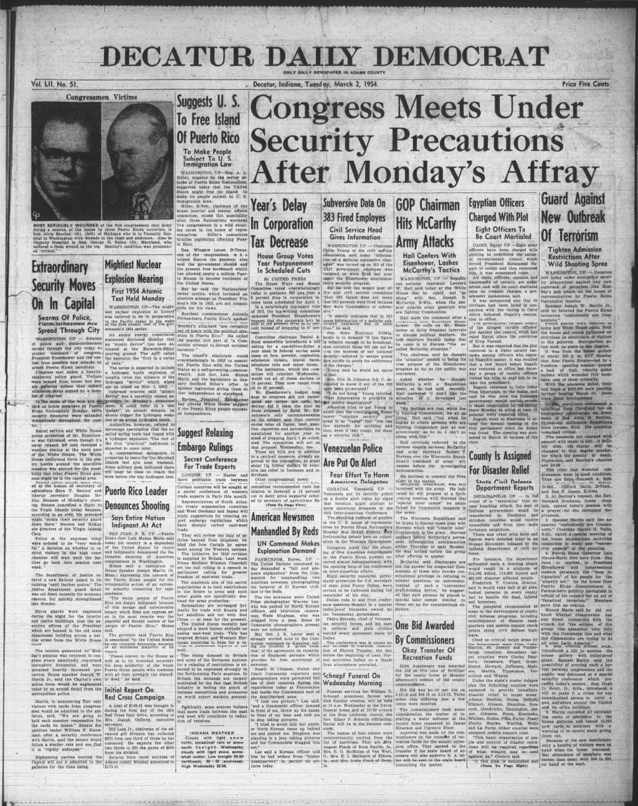

HN-596: Capitol shooting report miscounts attackers
HN-596 · March 2, 1954 · War, Conflict & Security > Terrorism & Political Violence > Political militancy

page image (archive tiles)Recorded finding
1954 Capitol shooting some seed/newspaper headlines say THREE attackers, but FOUR participated.
Discovery narrative
Source: Decatur Daily Democrat, p. 1 — original page; U.S. House Historian, 1954 chamber shooting.
Report: The caption identified five wounded congressmen but attributed the March 1 House-gallery gunfire to “three Puerto Rican terrorists.” It described Representative Alvin Bentley as critically injured.
Assessment: House records establish four Puerto Rican Nationalist Party attackers, with five Representatives wounded and none killed. The newspaper's three was an incorrect contemporary account or caption. Modern historical description must distinguish an independence movement's armed faction from Puerto Ricans generally.
Curated audit flag
Class: Metadata/identity (M)
Recorded difference/concern: 1954 Capitol shooting some seed/newspaper headlines say THREE attackers, but FOUR participated.
Assessment: New York Times 2 March reproduced-headline B; five wounded legislators is a separate count.
Source links: https://cowlatinamerica.voices.wooster.edu/archive-item/the-puerto-rican-independence-movement/
Original archive images (1)
Authentic images retrieved from Hoosier State Chronicles (Indiana State Library). Article crops are located using the archive's own OCR word coordinates and rendered at native crop resolution; article clips are assembled from the archive's own article-block images; page images marked "archive tiles" are stitched from the archive's own tiled page service at its 256-px tile cap; page images marked "issue PDF" are single pages rasterised from the archive's own issue PDF, with the page chosen by matching the headline against the PDF's text layer; page scans are reduced-size access renditions. No images were generated, mocked, or retouched.

Hoosier State Chronicles (Indiana State Library)
Open larger view · Archive viewer (full resolution)
Source acquisition
Status: Archive images acquired
Authentic archive-owned image renditions were retrieved for this record and are displayed above. The source-acquisition manifest preserves the original pre-acquisition feasibility assessment.
Original seed
URL (preserved verbatim): https://newspapers.library.in.gov/?a=d&d=DCDD19540302.1.1
Saved research report: Historical_Newspaper_Event_Research_578-602_2026-10-23.md
Evidence note: A newspaper report means a historical publication made a claim; it does not establish that claim as fact. Contemporary reporting is separated from later scholarly context and our own assessment.